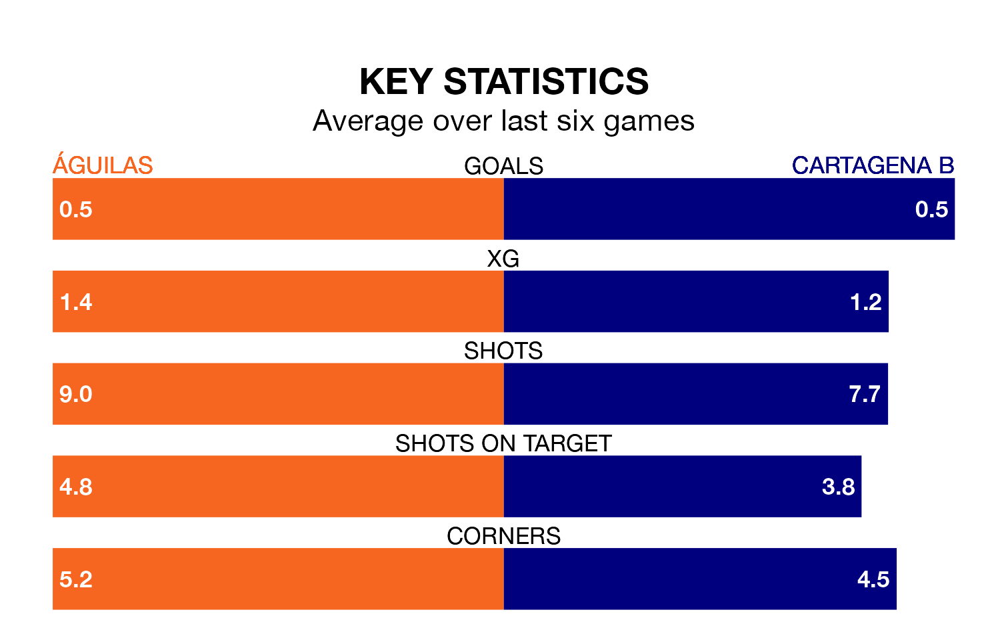

Águilas are heavy favourites to keep all three points at home in Sunday's late kick-off against Cartagena B.
Águilas, who sit seventh in the Segunda División RFEF Group 4 with 28 games played, are priced at 1.4 to seal victory.
Sitting 11 places and 22 points behind them in the table, Cartagena B are 7.5 to win with *Betting Company*, while the draw is at 3.8.
Águilas are in disappointing form in the Segunda División RFEF Group 4, with one win and two draws from their last six games.
With no wins and three draws over that period, Cartagena B's form is slightly worse – they have taken three points from 18, compared to the hosts' five.
In the last 10 years, Águilas and Cartagena B have played each other on six occasions. Águilas won four of them and they drew twice.
On average, Águilas scored 1.5 goals and Cartagena B 0.7 in those matches.
Their last meeting was on November 19, when Águilas won 2-0 away.
With 20 goals in 28 games so far this season, Águilas are the league's joint-third-lowest scorers with 0.7 goals per game. But they are conceding fewer than average too, letting in 14 goals at a rate of 0.5 per game.
The away side are also below average scorers, with 0.8 goals per game, compared to a league average of 1.0. They have conceded 1.5 goals per game.
Águilas's last match was on March 23, a 2-1 loss against Orihuela CF, with Francisco Jesús Ferrón Ruiz getting the goal for Águilas.
Cartagena B lost 2-1 against Yeclano Deportivo last time out, on March 24, with Diego Iglesias Yuste on the scoresheet.
Updated: 10:31 (UTC), 31/03/24